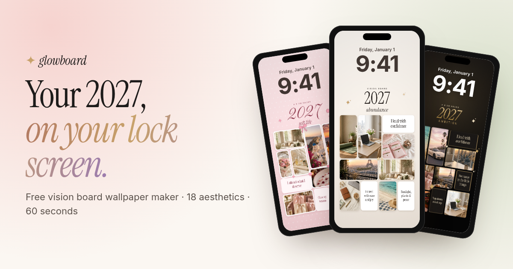

2027 GUIDE · 6 MIN READ
How to make a vision board lock screen that you’ll actually look at
A vision board on your wall is nice. One on your lock screen is something you see every time you pick up your phone. Here’s how to make one for 2027 that looks good and keeps your goals specific.

Skip ahead: make yours free in 60 seconds →1. Pick 4–7 life areas, not 20
The most common vision board mistake is cramming everything in. A phone screen is small. Choose the four to seven areas that matter most this year, for example travel, money, career, health, love, home, self-care or growth, and give each one picture and one sentence.
2. Write goals you could check off
“Be healthier” is a wish. “Run a half marathon” or “$10k saved by December” is a goal. Mix one or two specific goals with short affirmations in the present tense (“Money flows to me easily”, “I’m proud of the work I do”). Then pick a single word of the year, like abundance, peace, courage or glow. It becomes the headline of your board.
3. Choose one aesthetic and stick to it
Consistency is what makes a board look “Pinterest” instead of messy. Popular looks for 2027:
- Clean girl: cream, beige and gold, with soft serif type.
- Coquette: blush pink, bows and handwritten script.
- Old money: deep green, cream mats and thin gold frames.
- Dark luxe: black and champagne gold. Very easy on the eyes at night.
- Y2K chrome: iridescent gradients and stars.
- Polaroid scrapbook: a corkboard, tape and handwritten captions.
4. Leave room for the clock
On both iPhone and Android, the time sits at the top of the lock screen. If your best photo is up there, the clock will cover it. Keep the top quarter of the wallpaper calm (just background or your title) and put the collage in the middle and lower half. Glowboard does this automatically with the Leave space for the clock switch.
5. Export at the right size
| Device | Wallpaper size |
|---|---|
| iPhone 15 / 16 / 17 (6.1") | 1179 × 2556 px |
| iPhone Pro Max / Plus | 1290 × 2796 px (1179 × 2556 scales fine) |
| Most Android phones | 1080 × 2400 px |
| Desktop / laptop | 3840 × 2160 px (4K) |
| Printed A4 board | 2480 × 3508 px |
6. Set it as your lock screen
iPhone: save the image to Photos, open it, tap Share, then Use as Wallpaper. Turn off depth effect if the clock looks odd, then tap Add, then Set as Wallpaper Pair or Customize Home Screen.
Android: open the image in Gallery or Google Photos, tap ⋮, then Set as wallpaper, then Lock screen.
7. Refresh it every quarter
Many people redo their lock screen board every three months. They swap in the goals they’re working on now and celebrate the ones they’ve hit. A new look also makes you notice the board again.
Need ideas for an aesthetic?
See examples for coquette, old money, clean girl, mob wife and 8 more looks, plus 152 short affirmations grouped by goal.
Make my 2027 vision board lock screen →Glowboard is free to use. Your photos stay on your device, and we never ask for a selfie.